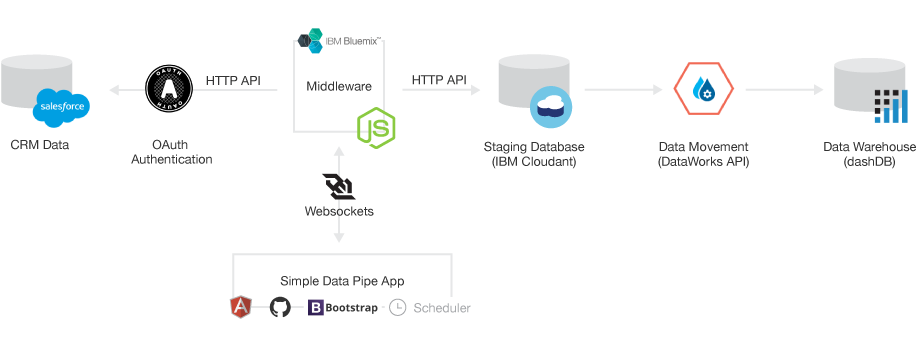

Welcome back! Check out your pipe activity.
The Simple Data Pipe is an app that moves your Salesforce data to dashDB, which is the IBM cloud data warehouse. Once you have your Salesforce data in dashDB, you can do all kinds of analysis on it, with all kinds of tools, such as SQL and Cognos Embeddable Reporting.

This app is based on the Simple Data Pipes app by Sarah Maston and David Taieb from the IBM Cloud Data Services developer advocacy team. There are lots of ways to connect with them, if you'd like to learn more.